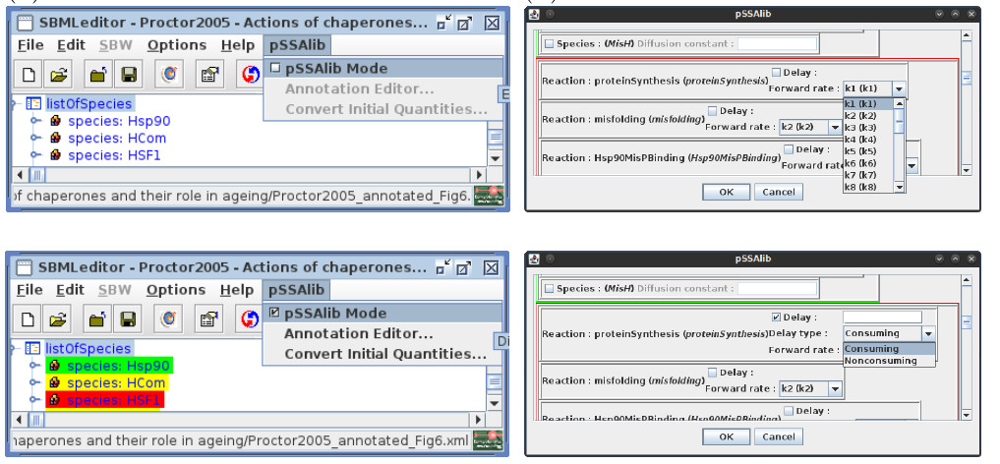

We give an overview of the partial-propensity stochastic simulation algorithms library (pSSAlib), a complete and portable C++ implementation of all partial-propensity stochastic simulation algorithms (SSAs), complemented with tools for running simulations and analyzing the results.
For details on the partial propensity methods please refer to the articles in the References section.
You can download the pSSAlib distribution package here, or use the following command on the terminal (requires wget):
Then uncompress the archive with the package using (requires tar):
and change the current working directory to the package directory:
A modern compiler (tested with gcc 4.8.0 and clang 3.8.0) with recent implementation of C++ Standard Template Library (STL), the GNU Scientific Library (GSL), Boost C++ Libraries (tested with 1.55.0), and the Systems Biology Markup Language (SBML) C++ library (tested with 5.13.0) are required.
On some platforms the SBML library (libSBML) has to be built from sources. Below are sample commands to install these prerequisites:
Ubuntu 16.04:
Fedora 26:
MacOS X 10.12: We suggest to use the brew package manager for building required dependencies.
Please ensure that /usr/local is writable by your account!
pSSAlib was designed for stock libSBML, so installing respective packages provided in the software repositories or building with default settings is sufficient.
Once all the dependencies are installed, pSSAlib can be configured and built. The pSSAlib build system is based on GNU Automake (at least version 2.63) and has been tested on several Linux distributions and MacOS X. Typically, these are the commands that need to be executed on the console:
and, optionally, pSSAlib can be installed with:
On some setups, paths for libSBML cannot be determined automatically.
For instance, the default installation path for libSBML library and include files are /usr/local/lib and /usr/local/include respectively, which sometimes is NOT on the compiler search path.
In this case, please use the respective ./configure options: --with-libsbml-libdir and --with-libsbml-include to specify libSBML library and include paths respectively.
Example:
~/pssalib-2.0.0 $
./configure --with-libsbml-libdir=<path/to/library/files> --with-libsbml-include=<path/to/include/files>
Now the path to the libSBML shared library has to be provided to the runtime environment before running the software.
One can alleviate this requirement by linking pSSAlib to libSBML statically via the --with-libsbml-static option to ./configure. The respective dependencies to libSBML have to be provided in the SBML_LDFLAGS environment variable.
After building the binaries, the build system installs the static and dynamic libraries under the respective library path. In addition, the Command Line Interface (CLI) binaries (the simulator and the analyzer) are placed under binaries path. Examples and test binaries are not included in the installation process.
pSSAlib provides 4 SSAs, each of them supports reactions with temporal delays as well as spatiotemporal simulations:
pSSAlib features can be accessed by either (i) direct calls from C++ code using the library’s Application Programming Interface (API) or (ii) using the Command Line Interface (CLI). The model can either be loaded from an annotated SBML file or defined dynamically and passed to the library through the API. Parameters, including diffusion constants, reaction rates, and time delays are defined as annotations in the SBML model. Annotations can be either done manually in a text editor or assisted by the pSSAlib plug-in for the SBMLToolbox.
pSSAlib simulations can be performed in parallel using the Message Passing Interface (MPI) library for inter-processor communication on compute clusters.
Parallel simulations sample individual trajectories on different processors.
To enable this feature please use the option --with-mpi for the ./configure script.
MPI parallelism is implemented both for the command-line interface as well as the C++ library.
Each process starts an independent pseudo-random number generator, initialized with the seed:
seed = truncated_to_64bit[sha1 (time * process id * rank)]
Hence, uncorrelated sampling across all processes can not be guaranteed in general.
This requires a proper parallel random-number generator, like SPRNG.
Initially, partial-propensity methods supported elementary reactions only. These are reactions with 2 or less reacting molecules. However, pSSAlib can simulate certain non-elementary reactions. These are supported if the reaction has at most two reactants and one of them has a stoichiometry coefficient equal to one. Supported reaction patterns are listed below.
The example below shows how to implement a C++ client for pSSAlib.
This code is located in the subdirectory examples/gray-scott-2d and implements a spatiotemporal simulator for the Gray-Scott reaction-diffusion system:
The following code excerpt also demonstrates the use of dynamic model generation and VTK output formatting.
examples/gray-scott-2d/main.cpp
// .. other include statements
#include "PSSA.h"
#include "util/MPIWrapper.h"
#include "util/FileSystem.h"
#include "util/ProgramOptionsBase.hpp"
#include "util/SimulationDataSource.hpp"
/**
* @class GrayScott2D
* @brief Gary-Scott 2D system
*/
class GrayScott2D : public ProgramOptionsBase
{
// ... implementation details
public:
/**
* Generates an SBML model using current parameter values.
* @return @true if parser succeeds, @false otherwise.
*/
void generateSBML(pssalib::datamodel::SimulationInfo & simInfo)
{
// ...
}
/**
* Population initializer (see @file typedef.h for argument definition).
*/
static void initialPopulation(pssalib::datamodel::DataModel * ptrData, UINTEGER ** arPtrPopulation, void * grayscott)
{
GrayScott2D * ptrGS = static_cast<GrayScott2D *>(grayscott);
gsl_rng * ptrRNG = gsl_rng_alloc(gsl_rng_default);
const REAL UHH = ptrGS->u * GrayScott2D::H * GrayScott2D::H;
const UINTEGER NN = // number of points
const UINTEGER lo = std::floor(0.375*NN);
const UINTEGER hi = std::floor(0.625*NN);
for(UINTEGER svi = 0; svi < ptrData->getSubvolumesCount(); ++svi)
{
REAL r = (REAL)gsl_rng_uniform (ptrRNG);
UINTEGER a = svi % NN;
UINTEGER b = svi / NN;
if (a > lo && a < hi && b > lo && b < hi)
{
arPtrPopulation[svi][0] = UHH/2.0 + (0.04*(r-0.5)*UHH + 0.5);
arPtrPopulation[svi][1] = UHH/4.0 + (0.02*(r-0.5)*UHH + 0.5);
}
else
{
arPtrPopulation[svi][0] = UHH;
arPtrPopulation[svi][1] = 0;
}
}
gsl_rng_free(ptrRNG);
}
// Get ids of species in the current model
const std::vector<STRING> & getSpeciesIds() const
{
static std::vector<STRING> ids;
if(ids.empty())
{
ids.push_back(STRING("S0"));
ids.push_back(STRING("S1"));
}
return ids;
}
};
// Callback for simulation status reporting
void progress_callback(UINTEGER a, UINTEGER b, SHORT c, void * /*user*/)
{
static SHORT c_old = std::numeric_limits<SHORT>::max();
if(c != c_old)
{
fprintf(stderr, "Progress: sample %u of %u is %hu%% done\n", a, b, c);
c_old = c;
}
}
// entry point
int main(int argc, char** argv)
{
PSSALIB_MPI_IO_INIT;
try
{
// Temporary stream for trajectory
STRINGSTREAM ssTrajectory;
// Test case object
GrayScott2D grayscott;
// Simulation parameters
pssalib::datamodel::SimulationInfo simInfo;
/*
* Parse command line arguments and configuration file
* ...
*/
// generate the model
grayscott.generateSBML(simInfo);
///////////////////////////////////////
// initialize the SimulationInfo object
// number of samples
simInfo.unSamplesTotal = 1;
// time - 100 time steps
simInfo.dTimeEnd = // ...
simInfo.dTimeStep = simInfo.dTimeEnd / 100.0;
// output all species
delete simInfo.pArSpeciesIds;
simInfo.pArSpeciesIds = NULL;
// suppress all outputs except the desired ones
simInfo.unOutputFlags = pssalib::datamodel::SimulationInfo::ofNone
| pssalib::datamodel::SimulationInfo::ofTrajectory;
// redirect streams
simInfo.setOutputStreamBuf(pssalib::datamodel::SimulationInfo::ofLog, std::cerr.rdbuf());
simInfo.setOutputStreamBuf(pssalib::datamodel::SimulationInfo::ofTrajectory, ssTrajectory.rdbuf());
// set up the domain
simInfo.setDims(2, /* ... */);
// periodic BCs
simInfo.eBoundaryConditions = pssalib::datamodel::detail::BC_Periodic;
// custom population initializer
simInfo.eInitialPopulation = pssalib::datamodel::detail::IP_UserDefined;
simInfo.ptrPopulationInitializer = GrayScott2D::initialPopulation;
simInfo.ptrPopulationInitializerUserData = &grayscott;
// create an instance of the simulation engine
boost::scoped_ptr<pssalib::PSSA> ptrPSSA(new pssalib::PSSA());
// initialize the call-backs
// ptrPSSA->SetReactionCallback(&reaction_callback, &grayscott);
ptrPSSA->SetProgressCallback(&progress_callback, NULL);
// set the simulation method
if(!ptrPSSA->setMethod(grayscott.getMethod()))
{
PSSALIB_MPI_CERR_OR_NULL << "Error : failed to set simulation method "
<< pssalib::PSSA::getMethodName(grayscott.getMethod()) << std::endl;
return -126;
}
// run the simulation and collect timing information
if(ptrPSSA->run(&simInfo))
{
// parse the simulation engine output
SimulationDataSource sds;
if(!sds.load(ssTrajectory))
{
PSSALIB_MPI_CERR_OR_NULL << "Could not load trajectory from the data stream!\n";
return -125;
}
else
{
// create a VTK output formatter and set it up for the output dataset
VTKOutputFormatter fmt(simInfo.getDimsCount(), simInfo.getDims(), grayscott.getSpeciesIds());
// ensure output path exists
STRING strPath(grayscott.getOutputPath());
if(!pssalib::util::makeDir(strPath))
{
PSSALIB_MPI_CERR_OR_NULL << "Could not create output path '" << strPath << "'\n";
return -124;
}
// create a file path by concatenating directory path and file name pattern
pssalib::util::makeFilePath(strPath, grayscott.getFilePattern(), strPath);
// store the resulting dataset
if(!sds.store(strPath, fmt))
{
PSSALIB_MPI_CERR_OR_NULL << "Could not store trajectory as VTK output to '" << strPath << "'\n";
return -123;
}
}
}
else
{
PSSALIB_MPI_CERR_OR_NULL
<< "FAILED to simulate '" << ptrPSSA->getModelName() << "' using "
<< pssalib::PSSA::getMethodName(grayscott.getMethod()) << " ... \n";
return -122;
}
}
catch(...)
{
// Error handling
}
return 0;
}
By specifying model parameters from the command line, one can define different model variants and obtains correspondingly different solutions, here concentration patterns changing over time. The movies below represent some of the possible patterns alongside with the command to generate them. Default parameter values are \( F = 0.43 \), \( k = 0.065 \), \( k_{1} = 1 \), \( u = 10^{7} \), \( D_{A} = 8 \times 10^{9} \), \( D_{B} = 4 \times 10^{9} \).
|
~/pssalib-2.0.0/examples/gray-scott-2d/ $
./grayscott --da 2e7 --db 1e7 --F 0.40 --k 0.060 --u 1e6
|
~/pssalib-2.0.0/examples/gray-scott-2d/ $
./grayscott --da 8e7 --db 4e7 --F 0.43 --k 0.066 --u 1e6
|
~/pssalib-2.0.0/examples/gray-scott-2d/ $
./grayscott --da 8e7 --db 4e7 --F 0.43 --k 0.069 --u 1e6
|
|
~/pssalib-2.0.0/examples/gray-scott-2d/ $
./grayscott --da 2e9 --db 1e9 --F 0.40 --k 0.060 --u 1e7
|
~/pssalib-2.0.0/examples/gray-scott-2d/ $
./grayscott --da 8e9 --db 4e9 --F 0.43 --k 0.065 --u 1e7
|
~/pssalib-2.0.0/examples/gray-scott-2d/ $
./grayscott --da 8e9 --db 4e9 --F 0.43 --k 0.069 --u 1e7
|
When running the above Gray-Scott example, it will report simulation progress and then output 100 VTK frames of the simulation into the specified directory. These can be visualized using the Paraview software.
Here we demonstrate the application of pSSAlib to a model of age-related impairment of the heat-shock response, showing that efficient simulations enable large sample sizes and that the correspondingly accurate population averages reproduce published results.
Chaperones play an important role in cell physiology by assisting in proper folding of nascent proteins, refolding of misfolded proteins at elevated temperatures, catalyzing protein degradation in the lysosomes, and preventing protein aggregation.
However, the amount of damaged protein in a cell increases with cell age, suggesting an impairment of the heat-shock response.
An SBML model of this system is publicly available from the BioModels Database.
An annotated version of this model, which is ready to be processed by the CLI, is available in the subdirectory examples/tutorial/.
To illustrate the CLI, we use the heat-shock response model of an unstressed cell.
We let the simulation engine sample 100 trajectories using SPDM as the simulation algorithm. We chose to collect simulation output every 10 s of simulated time. The respective CLI call to the simulator reads:
We then use the pSSAlib analyzer to statistically analyze the simulation data and to plot the results.
We selected the species to be included in the analysis using the -s command-line option followed by the respective species names as a comma-separated list.
The two calls to the analyzer below serve to plot a single trajectory for the selected
species by specifying both -n 1 and -r trajectories:
By specifying -i examples/tutorial/Proctor2005_annotated_Fig6.xml and --tend 1e5, the results for Figure 6 from the original publication are reproduced. A list of all supported options can be printed out by specifying the --help option on the command-line.
Core SBML as of V4L2 does not support spatial aspects of the system nor the definition of specific probability rates for forward and reverse reactions.
To accommodate this data in the model file, pSSAlib uses custom annotations in the definitions of Species and Reaction objects.
Diffusion is defined by the libpSSA:diffusion annotation object in the definition of each diffusive species. The diffusion constant is defined via the libpSSA:value attribute value, see the example below:
<species compartment="..." id="..." initialAmount="..." name="...">
<annotation>
<libpSSA:diffusion xmlns:libpSSA="uri" libpSSA:value="{value}"/>
</annotation>
</species>
Specific probability rates for reactions are also defined in the respective annotations of the Reaction objects.
Two rates can be defined per object, corresponding to forward and reverse reaction rates (in case of reversible reactions):
<reaction id="..." reversible="...">
...
<annotation>
<libpSSA:rate xmlns:libpSSA="uri">
<pSSAlib:forward pSSAlib:value="{value}"/>
<pSSAlib:reverse pSSAlib:value="{value}"/>
</libpSSA:rate>
</annotation>
</reaction>
By a similar token, delays are also defined in a separate annotation object.
Delay type (consuming or non-consuming) is specified as a respective attribute, while the delay value is defined by the libpSSA:value attribute, see the example below:
<reaction id="..." reversible="...">
...
<annotation>
<libpSSA:delay xmlns:libpSSA="uri" [pSSAlib:consuming | pSSAlib:nonconsuming ] pSSAlib:value="{value}"/>
</annotation>
</reaction>
Here {value} can be either a floating point number, in which case it is treated as a dimensionless quantity, or a string corresponding to a parameter identifier in the SBML model.
In order to facilitate manual editing of reaction rates, reaction delays, and diffusion constants, pSSAlib includes a plug-in for the SBMLToolbox. For ease of installation, we provide a pre-packaged distribution of the SBMLToolbox for download on the pSSAlib website. The plug-in is activated seamlessly via the respective menu item and, when active, indicates whether the individual model components (reactions and species) contain valid annotations that can be processed by pSSAlib. The plug-in also provides a graphical user interface for editing the respective annotations. Reaction annotations contain the reaction rates and time delays with their respective values. The plug-in uses a color code to highlight SBML nodes that can be edited, marking a node without annotation with a yellow background, red background for an invalid annotation, and green background for a valid annotation.
Rajesh Ramaswamy, Nelido Gonzalez-Segredo, and Ivo F. Sbalzarini. A new class of highly efficient exact stochastic simulation algorithms for chemical reaction networks. THE JOURNAL OF CHEMICAL PHYSICS, 130, 244104 (2009) (PDF)
Rajesh Ramaswamy, and Ivo F. Sbalzarini. A partial-propensity variant of the composition-rejection stochastic simulation algorithm for chemical reaction networks. THE JOURNAL OF CHEMICAL PHYSICS 132, 044102 (2010) (PDF)
Rajesh Ramaswamy, and Ivo F. Sbalzarini. A partial-propensity formulation of the stochastic simulation algorithm for chemical reaction networks with delays. THE JOURNAL OF CHEMICAL PHYSICS 134, 014106 (2011) (PDF)
Rajesh Ramaswamy and Ivo F. Sbalzarini. Exact on-lattice stochastic reaction-diffusion simulations using partial-propensity methods. THE JOURNAL OF CHEMICAL PHYSICS, 135, 244103 (2011) (PDF)